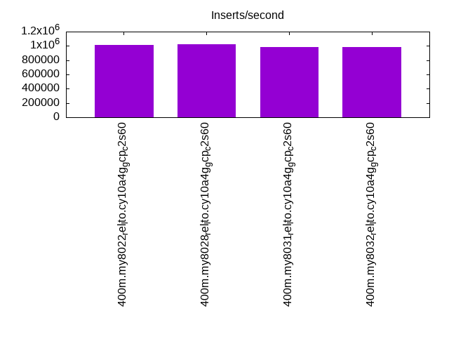
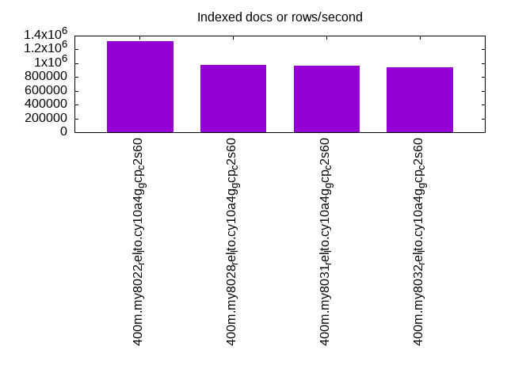
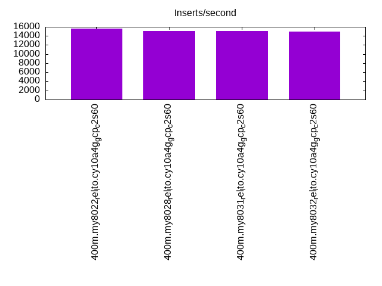
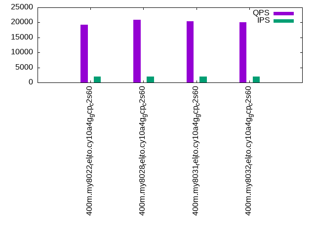
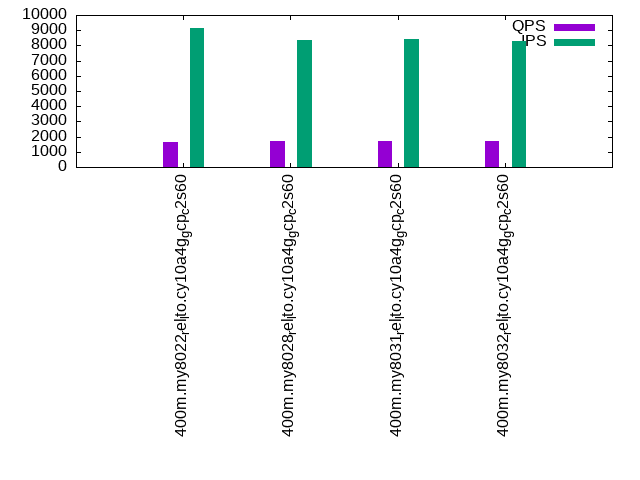
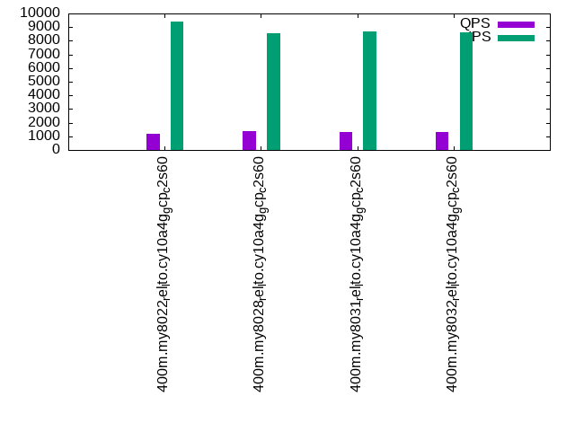

This is a report for the insert benchmark with 400M docs and 20 client(s). It is generated by scripts (bash, awk, sed) and Tufte might not be impressed. An overview of the insert benchmark is here and a short update is here. Below, by DBMS, I mean DBMS+version.config. An example is my8020.c10b40 where my means MySQL, 8020 is version 8.0.20 and c10b40 is the name for the configuration file.
This is a report for the insert benchmark with 400M docs and 20 client(s). It is generated by scripts (bash, awk, sed) and Tufte might not be impressed. An overview of the insert benchmark is here and a short update is here. Below, by DBMS, I mean DBMS+version.config. An example is my8020.c10b40 where my means MySQL, 8020 is version 8.0.20 and c10b40 is the name for the configuration file.The test server is c2-standard-60 from GCP with 30 cores, hyperthreads disabled, 240G RAM and 3T of NVMe (XFS with RAID0 over 8 devices). The benchmark was run with 20 clients and there were 1 or 2 connections per client (1 for queries, 1 for inserts). It uses 20 tables with a client per table. It loads 20M rows per table without secondary indexes, creates secondary indexes, loads another 20M rows per table then does 3 read+write tests for one hour each that do queries as fast as possible with 100, 500 and then 1000 writes/second/client concurrent with the queries. The database is cached by the OS but not by InnoDB. Clients and the DBMS share one server. The per-database configs are in the per-database subdirectories here.
The tested DBMS are:
The numbers are inserts/s for l.i0 and l.i1, indexed docs (or rows) /s for l.x and queries/s for q*.2. The values are the average rate over the entire test for inserts (IPS) and queries (QPS). The range of values for IPS and QPS is split into 3 parts: bottom 25%, middle 50%, top 25%. Values in the bottom 25% have a red background, values in the top 25% have a green background and values in the middle have no color. A gray background is used for values that can be ignored because the DBMS did not sustain the target insert rate. Red backgrounds are not used when the minimum value is within 80% of the max value.
| dbms | l.i0 | l.x | l.i1 | q100.1 | q500.1 | q1000.1 |
|---|---|---|---|---|---|---|
| 400m.my8022_rel_lto.cy10a4g_gcp_c2s60 | 1010101 | 1324834 | 15660 | 19230 | 1650 | 1156 |
| 400m.my8028_rel_lto.cy10a4g_gcp_c2s60 | 1025641 | 973479 | 15142 | 20837 | 1697 | 1378 |
| 400m.my8031_rel_lto.cy10a4g_gcp_c2s60 | 985222 | 966425 | 15093 | 20454 | 1707 | 1319 |
| 400m.my8032_rel_lto.cy10a4g_gcp_c2s60 | 985222 | 945863 | 14932 | 20102 | 1695 | 1289 |
This table has relative throughput, throughput for the DBMS relative to the DBMS in the first line, using the absolute throughput from the previous table.
| dbms | l.i0 | l.x | l.i1 | q100.1 | q500.1 | q1000.1 |
|---|---|---|---|---|---|---|
| 400m.my8022_rel_lto.cy10a4g_gcp_c2s60 | 1.00 | 1.00 | 1.00 | 1.00 | 1.00 | 1.00 |
| 400m.my8028_rel_lto.cy10a4g_gcp_c2s60 | 1.02 | 0.73 | 0.97 | 1.08 | 1.03 | 1.19 |
| 400m.my8031_rel_lto.cy10a4g_gcp_c2s60 | 0.98 | 0.73 | 0.96 | 1.06 | 1.03 | 1.14 |
| 400m.my8032_rel_lto.cy10a4g_gcp_c2s60 | 0.98 | 0.71 | 0.95 | 1.05 | 1.03 | 1.12 |
This lists the average rate of inserts/s for the tests that do inserts concurrent with queries. For such tests the query rate is listed in the table above. The read+write tests are setup so that the insert rate should match the target rate every second. Cells that are not at least 95% of the target have a red background to indicate a failure to satisfy the target.
| dbms | q100.1 | q500.1 | q1000.1 |
|---|---|---|---|
| my8022_rel_lto.cy10a4g_gcp_c2s60 | 1978 | 9114 | 9404 |
| my8028_rel_lto.cy10a4g_gcp_c2s60 | 1977 | 8388 | 8565 |
| my8031_rel_lto.cy10a4g_gcp_c2s60 | 1977 | 8439 | 8662 |
| my8032_rel_lto.cy10a4g_gcp_c2s60 | 1977 | 8306 | 8610 |
| target | 2000 | 10000 | 20000 |
l.i0: load without secondary indexes. Graphs for performance per 1-second interval are here.
Average throughput:
Insert response time histogram: each cell has the percentage of responses that take <= the time in the header and max is the max response time in seconds. For the max column values in the top 25% of the range have a red background and in the bottom 25% of the range have a green background. The red background is not used when the min value is within 80% of the max value.
| dbms | 256us | 1ms | 4ms | 16ms | 64ms | 256ms | 1s | 4s | 16s | gt | max |
|---|---|---|---|---|---|---|---|---|---|---|---|
| my8022_rel_lto.cy10a4g_gcp_c2s60 | 0.867 | 98.648 | 0.441 | 0.008 | 0.036 | 0.248 | |||||
| my8028_rel_lto.cy10a4g_gcp_c2s60 | 1.379 | 98.059 | 0.481 | 0.045 | 0.031 | 0.005 | 0.313 | ||||
| my8031_rel_lto.cy10a4g_gcp_c2s60 | 0.639 | 98.738 | 0.541 | 0.047 | 0.034 | 0.003 | 0.288 | ||||
| my8032_rel_lto.cy10a4g_gcp_c2s60 | 0.424 | 98.923 | 0.574 | 0.043 | 0.036 | 0.001 | 0.270 |
Performance metrics for the DBMS listed above. Some are normalized by throughput, others are not. Legend for results is here.
ips qps rps rmbps wps wmbps rpq rkbpq wpi wkbpi csps cpups cspq cpupq dbgb1 dbgb2 rss maxop p50 p99 tag 1010101 0 0 0.0 2675.0 275.6 0.000 0.000 0.003 0.279 217517 66.3 0.215 20 26.4 155.0 0.7 0.248 54540 40656 400m.my8022_rel_lto.cy10a4g_gcp_c2s60 1025641 0 0 0.0 2650.1 279.4 0.000 0.000 0.003 0.279 225417 65.4 0.220 19 26.4 155.0 0.7 0.313 57636 38358 400m.my8028_rel_lto.cy10a4g_gcp_c2s60 985222 0 0 0.0 2525.5 269.3 0.000 0.000 0.003 0.280 219555 65.7 0.223 20 26.4 155.0 0.7 0.288 53861 37559 400m.my8031_rel_lto.cy10a4g_gcp_c2s60 985222 0 0 0.0 2510.1 266.8 0.000 0.000 0.003 0.277 220331 66.4 0.224 20 26.4 155.0 0.7 0.270 52063 37572 400m.my8032_rel_lto.cy10a4g_gcp_c2s60
l.x: create secondary indexes.
Average throughput:
Performance metrics for the DBMS listed above. Some are normalized by throughput, others are not. Legend for results is here.
ips qps rps rmbps wps wmbps rpq rkbpq wpi wkbpi csps cpups cspq cpupq dbgb1 dbgb2 rss maxop p50 p99 tag 1324834 0 0 0.0 11225.9 1084.5 0.000 0.000 0.008 0.838 123436 24.0 0.093 5 58.8 187.4 0.8 0.009 NA NA 400m.my8022_rel_lto.cy10a4g_gcp_c2s60 973479 0 4880 337.7 18148.7 929.9 0.005 0.355 0.019 0.978 137147 30.9 0.141 10 58.8 187.4 0.7 0.025 NA NA 400m.my8028_rel_lto.cy10a4g_gcp_c2s60 966425 0 4823 333.5 18018.0 921.4 0.005 0.353 0.019 0.976 139103 35.3 0.144 11 58.8 187.4 0.7 0.016 NA NA 400m.my8031_rel_lto.cy10a4g_gcp_c2s60 945863 0 4764 329.6 17816.1 907.8 0.005 0.357 0.019 0.983 140985 35.2 0.149 11 58.8 187.4 0.7 0.015 NA NA 400m.my8032_rel_lto.cy10a4g_gcp_c2s60
l.i1: continue load after secondary indexes created. Graphs for performance per 1-second interval are here.
Average throughput:
Insert response time histogram: each cell has the percentage of responses that take <= the time in the header and max is the max response time in seconds. For the max column values in the top 25% of the range have a red background and in the bottom 25% of the range have a green background. The red background is not used when the min value is within 80% of the max value.
| dbms | 256us | 1ms | 4ms | 16ms | 64ms | 256ms | 1s | 4s | 16s | gt | max |
|---|---|---|---|---|---|---|---|---|---|---|---|
| my8022_rel_lto.cy10a4g_gcp_c2s60 | 1.347 | 10.888 | 53.497 | 32.333 | 1.935 | nonzero | 1.297 | ||||
| my8028_rel_lto.cy10a4g_gcp_c2s60 | 1.086 | 11.414 | 53.686 | 31.131 | 2.683 | nonzero | 1.160 | ||||
| my8031_rel_lto.cy10a4g_gcp_c2s60 | 0.696 | 10.464 | 54.933 | 31.289 | 2.617 | nonzero | 1.209 | ||||
| my8032_rel_lto.cy10a4g_gcp_c2s60 | 0.893 | 11.418 | 53.635 | 31.221 | 2.833 | nonzero | 1.178 |
Performance metrics for the DBMS listed above. Some are normalized by throughput, others are not. Legend for results is here.
ips qps rps rmbps wps wmbps rpq rkbpq wpi wkbpi csps cpups cspq cpupq dbgb1 dbgb2 rss maxop p50 p99 tag 15660 0 0 0.0 18029.8 411.7 0.000 0.001 1.151 26.923 407662 15.2 26.032 291 155.4 285.3 0.7 1.297 750 150 400m.my8022_rel_lto.cy10a4g_gcp_c2s60 15142 0 2 0.1 17109.1 398.2 0.000 0.009 1.130 26.932 272273 14.4 17.982 285 155.4 285.2 0.7 1.160 749 200 400m.my8028_rel_lto.cy10a4g_gcp_c2s60 15093 0 2 0.1 17199.1 405.2 0.000 0.007 1.140 27.492 275486 15.7 18.253 312 155.4 285.2 0.7 1.209 749 200 400m.my8031_rel_lto.cy10a4g_gcp_c2s60 14932 0 1 0.1 16918.1 397.2 0.000 0.006 1.133 27.240 270220 15.1 18.097 303 155.3 285.2 0.7 1.178 749 200 400m.my8032_rel_lto.cy10a4g_gcp_c2s60
q100.1: range queries with 100 insert/s per client. Graphs for performance per 1-second interval are here.
Average throughput:
Query response time histogram: each cell has the percentage of responses that take <= the time in the header and max is the max response time in seconds. For max values in the top 25% of the range have a red background and in the bottom 25% of the range have a green background. The red background is not used when the min value is within 80% of the max value.
| dbms | 256us | 1ms | 4ms | 16ms | 64ms | 256ms | 1s | 4s | 16s | gt | max |
|---|---|---|---|---|---|---|---|---|---|---|---|
| my8022_rel_lto.cy10a4g_gcp_c2s60 | 13.207 | 68.266 | 12.720 | 5.565 | 0.240 | 0.003 | nonzero | 0.288 | |||
| my8028_rel_lto.cy10a4g_gcp_c2s60 | 13.463 | 70.388 | 11.341 | 4.587 | 0.213 | 0.008 | nonzero | 0.672 | |||
| my8031_rel_lto.cy10a4g_gcp_c2s60 | 10.780 | 72.642 | 11.835 | 4.514 | 0.220 | 0.009 | nonzero | 0.748 | |||
| my8032_rel_lto.cy10a4g_gcp_c2s60 | 10.544 | 72.698 | 11.865 | 4.660 | 0.224 | 0.008 | nonzero | 0.595 |
Insert response time histogram: each cell has the percentage of responses that take <= the time in the header and max is the max response time in seconds. For max values in the top 25% of the range have a red background and in the bottom 25% of the range have a green background. The red background is not used when the min value is within 80% of the max value.
| dbms | 256us | 1ms | 4ms | 16ms | 64ms | 256ms | 1s | 4s | 16s | gt | max |
|---|---|---|---|---|---|---|---|---|---|---|---|
| my8022_rel_lto.cy10a4g_gcp_c2s60 | 0.035 | 18.889 | 60.156 | 20.576 | 0.344 | 0.927 | |||||
| my8028_rel_lto.cy10a4g_gcp_c2s60 | 0.447 | 27.940 | 54.314 | 15.953 | 1.321 | 0.025 | 1.840 | ||||
| my8031_rel_lto.cy10a4g_gcp_c2s60 | 0.224 | 27.593 | 54.632 | 15.950 | 1.561 | 0.040 | 1.743 | ||||
| my8032_rel_lto.cy10a4g_gcp_c2s60 | 0.328 | 30.540 | 51.946 | 15.669 | 1.494 | 0.022 | 1.527 |
Performance metrics for the DBMS listed above. Some are normalized by throughput, others are not. Legend for results is here.
ips qps rps rmbps wps wmbps rpq rkbpq wpi wkbpi csps cpups cspq cpupq dbgb1 dbgb2 rss maxop p50 p99 tag 1978 19230 101 2.0 11917.0 246.9 0.005 0.104 6.025 127.811 267966 29.0 13.935 452 157.9 287.7 0.7 0.288 1135 96 400m.my8022_rel_lto.cy10a4g_gcp_c2s60 1977 20837 98 1.7 11014.1 231.4 0.005 0.082 5.571 119.838 253821 30.8 12.181 443 157.9 287.7 0.7 0.672 1231 96 400m.my8028_rel_lto.cy10a4g_gcp_c2s60 1977 20454 62 1.2 11063.7 234.2 0.003 0.062 5.596 121.319 251401 31.8 12.291 466 157.9 287.7 0.7 0.748 1215 96 400m.my8031_rel_lto.cy10a4g_gcp_c2s60 1977 20102 76 1.4 10833.3 230.1 0.004 0.072 5.480 119.168 247207 31.5 12.297 470 157.9 287.7 0.7 0.595 1199 80 400m.my8032_rel_lto.cy10a4g_gcp_c2s60
q500.1: range queries with 500 insert/s per client. Graphs for performance per 1-second interval are here.
Average throughput:
Query response time histogram: each cell has the percentage of responses that take <= the time in the header and max is the max response time in seconds. For max values in the top 25% of the range have a red background and in the bottom 25% of the range have a green background. The red background is not used when the min value is within 80% of the max value.
| dbms | 256us | 1ms | 4ms | 16ms | 64ms | 256ms | 1s | 4s | 16s | gt | max |
|---|---|---|---|---|---|---|---|---|---|---|---|
| my8022_rel_lto.cy10a4g_gcp_c2s60 | 7.069 | 12.684 | 9.956 | 44.809 | 24.584 | 0.895 | 0.003 | 0.488 | |||
| my8028_rel_lto.cy10a4g_gcp_c2s60 | 8.687 | 13.905 | 11.304 | 43.823 | 20.859 | 1.397 | 0.025 | nonzero | 1.230 | ||
| my8031_rel_lto.cy10a4g_gcp_c2s60 | 5.903 | 14.954 | 11.847 | 44.949 | 21.038 | 1.284 | 0.025 | nonzero | 1.096 | ||
| my8032_rel_lto.cy10a4g_gcp_c2s60 | 8.517 | 14.544 | 11.167 | 43.318 | 21.059 | 1.370 | 0.024 | 0.778 |
Insert response time histogram: each cell has the percentage of responses that take <= the time in the header and max is the max response time in seconds. For max values in the top 25% of the range have a red background and in the bottom 25% of the range have a green background. The red background is not used when the min value is within 80% of the max value.
| dbms | 256us | 1ms | 4ms | 16ms | 64ms | 256ms | 1s | 4s | 16s | gt | max |
|---|---|---|---|---|---|---|---|---|---|---|---|
| my8022_rel_lto.cy10a4g_gcp_c2s60 | 0.193 | 2.524 | 38.638 | 54.574 | 4.072 | 0.851 | |||||
| my8028_rel_lto.cy10a4g_gcp_c2s60 | 0.202 | 2.454 | 37.083 | 52.396 | 7.844 | 0.021 | 1.458 | ||||
| my8031_rel_lto.cy10a4g_gcp_c2s60 | 0.129 | 2.139 | 36.653 | 53.373 | 7.685 | 0.020 | 1.759 | ||||
| my8032_rel_lto.cy10a4g_gcp_c2s60 | 0.178 | 2.169 | 36.096 | 53.595 | 7.934 | 0.027 | 1.673 |
Performance metrics for the DBMS listed above. Some are normalized by throughput, others are not. Legend for results is here.
ips qps rps rmbps wps wmbps rpq rkbpq wpi wkbpi csps cpups cspq cpupq dbgb1 dbgb2 rss maxop p50 p99 tag 9114 1650 158 2.8 19011.2 359.0 0.096 1.738 2.086 40.338 544350 18.2 329.989 3310 165.7 295.5 0.7 0.488 64 48 400m.my8022_rel_lto.cy10a4g_gcp_c2s60 8388 1697 257 4.2 17455.1 339.2 0.152 2.552 2.081 41.410 355605 16.9 209.500 2987 165.7 295.5 0.7 1.230 64 48 400m.my8028_rel_lto.cy10a4g_gcp_c2s60 8439 1707 190 3.4 17519.2 344.0 0.111 2.061 2.076 41.744 359983 18.3 210.923 3217 165.7 295.5 0.7 1.096 64 48 400m.my8031_rel_lto.cy10a4g_gcp_c2s60 8306 1695 231 4.0 17250.2 338.4 0.136 2.410 2.077 41.713 351478 17.8 207.349 3150 165.7 295.5 0.7 0.778 64 48 400m.my8032_rel_lto.cy10a4g_gcp_c2s60
q1000.1: range queries with 1000 insert/s per client. Graphs for performance per 1-second interval are here.
Average throughput:
Query response time histogram: each cell has the percentage of responses that take <= the time in the header and max is the max response time in seconds. For max values in the top 25% of the range have a red background and in the bottom 25% of the range have a green background. The red background is not used when the min value is within 80% of the max value.
| dbms | 256us | 1ms | 4ms | 16ms | 64ms | 256ms | 1s | 4s | 16s | gt | max |
|---|---|---|---|---|---|---|---|---|---|---|---|
| my8022_rel_lto.cy10a4g_gcp_c2s60 | 9.092 | 5.763 | 7.760 | 43.826 | 30.622 | 2.664 | 0.274 | nonzero | 1.026 | ||
| my8028_rel_lto.cy10a4g_gcp_c2s60 | 15.454 | 8.913 | 10.853 | 41.629 | 20.384 | 2.359 | 0.406 | nonzero | 1.103 | ||
| my8031_rel_lto.cy10a4g_gcp_c2s60 | 8.428 | 10.230 | 11.912 | 44.826 | 21.746 | 2.443 | 0.414 | nonzero | 1.275 | ||
| my8032_rel_lto.cy10a4g_gcp_c2s60 | 7.893 | 10.121 | 11.686 | 45.024 | 22.308 | 2.534 | 0.435 | nonzero | 1.393 |
Insert response time histogram: each cell has the percentage of responses that take <= the time in the header and max is the max response time in seconds. For max values in the top 25% of the range have a red background and in the bottom 25% of the range have a green background. The red background is not used when the min value is within 80% of the max value.
| dbms | 256us | 1ms | 4ms | 16ms | 64ms | 256ms | 1s | 4s | 16s | gt | max |
|---|---|---|---|---|---|---|---|---|---|---|---|
| my8022_rel_lto.cy10a4g_gcp_c2s60 | 0.943 | 6.151 | 40.657 | 43.577 | 8.662 | 0.009 | 1.650 | ||||
| my8028_rel_lto.cy10a4g_gcp_c2s60 | 0.882 | 7.443 | 43.460 | 35.901 | 12.254 | 0.059 | 1.785 | ||||
| my8031_rel_lto.cy10a4g_gcp_c2s60 | 0.549 | 6.723 | 43.697 | 36.970 | 12.005 | 0.057 | 1.935 | ||||
| my8032_rel_lto.cy10a4g_gcp_c2s60 | 0.562 | 6.779 | 43.436 | 36.894 | 12.274 | 0.055 | 2.102 |
Performance metrics for the DBMS listed above. Some are normalized by throughput, others are not. Legend for results is here.
ips qps rps rmbps wps wmbps rpq rkbpq wpi wkbpi csps cpups cspq cpupq dbgb1 dbgb2 rss maxop p50 p99 tag 9404 1156 204 4.0 17334.7 350.2 0.177 3.537 1.843 38.131 592639 17.7 512.619 4593 174.4 304.2 0.7 1.026 48 16 400m.my8022_rel_lto.cy10a4g_gcp_c2s60 8565 1378 288 6.1 15774.0 329.1 0.209 4.551 1.842 39.345 323777 15.7 235.012 3419 174.4 304.2 0.7 1.103 64 16 400m.my8028_rel_lto.cy10a4g_gcp_c2s60 8662 1319 286 6.1 15882.7 334.9 0.217 4.769 1.834 39.594 329607 17.1 249.854 3889 174.4 304.2 0.7 1.275 64 16 400m.my8031_rel_lto.cy10a4g_gcp_c2s60 8610 1289 297 6.4 15773.7 331.2 0.230 5.047 1.832 39.392 324809 16.8 251.985 3910 174.4 304.2 0.7 1.393 64 16 400m.my8032_rel_lto.cy10a4g_gcp_c2s60
l.i0: load without secondary indexes
Performance metrics for all DBMS, not just the ones listed above. Some are normalized by throughput, others are not. Legend for results is here.
ips qps rps rmbps wps wmbps rpq rkbpq wpi wkbpi csps cpups cspq cpupq dbgb1 dbgb2 rss maxop p50 p99 tag 1010101 0 0 0.0 2675.0 275.6 0.000 0.000 0.003 0.279 217517 66.3 0.215 20 26.4 155.0 0.7 0.248 54540 40656 400m.my8022_rel_lto.cy10a4g_gcp_c2s60 1025641 0 0 0.0 2650.1 279.4 0.000 0.000 0.003 0.279 225417 65.4 0.220 19 26.4 155.0 0.7 0.313 57636 38358 400m.my8028_rel_lto.cy10a4g_gcp_c2s60 985222 0 0 0.0 2525.5 269.3 0.000 0.000 0.003 0.280 219555 65.7 0.223 20 26.4 155.0 0.7 0.288 53861 37559 400m.my8031_rel_lto.cy10a4g_gcp_c2s60 985222 0 0 0.0 2510.1 266.8 0.000 0.000 0.003 0.277 220331 66.4 0.224 20 26.4 155.0 0.7 0.270 52063 37572 400m.my8032_rel_lto.cy10a4g_gcp_c2s60
l.x: create secondary indexes
Performance metrics for all DBMS, not just the ones listed above. Some are normalized by throughput, others are not. Legend for results is here.
ips qps rps rmbps wps wmbps rpq rkbpq wpi wkbpi csps cpups cspq cpupq dbgb1 dbgb2 rss maxop p50 p99 tag 1324834 0 0 0.0 11225.9 1084.5 0.000 0.000 0.008 0.838 123436 24.0 0.093 5 58.8 187.4 0.8 0.009 NA NA 400m.my8022_rel_lto.cy10a4g_gcp_c2s60 973479 0 4880 337.7 18148.7 929.9 0.005 0.355 0.019 0.978 137147 30.9 0.141 10 58.8 187.4 0.7 0.025 NA NA 400m.my8028_rel_lto.cy10a4g_gcp_c2s60 966425 0 4823 333.5 18018.0 921.4 0.005 0.353 0.019 0.976 139103 35.3 0.144 11 58.8 187.4 0.7 0.016 NA NA 400m.my8031_rel_lto.cy10a4g_gcp_c2s60 945863 0 4764 329.6 17816.1 907.8 0.005 0.357 0.019 0.983 140985 35.2 0.149 11 58.8 187.4 0.7 0.015 NA NA 400m.my8032_rel_lto.cy10a4g_gcp_c2s60
l.i1: continue load after secondary indexes created
Performance metrics for all DBMS, not just the ones listed above. Some are normalized by throughput, others are not. Legend for results is here.
ips qps rps rmbps wps wmbps rpq rkbpq wpi wkbpi csps cpups cspq cpupq dbgb1 dbgb2 rss maxop p50 p99 tag 15660 0 0 0.0 18029.8 411.7 0.000 0.001 1.151 26.923 407662 15.2 26.032 291 155.4 285.3 0.7 1.297 750 150 400m.my8022_rel_lto.cy10a4g_gcp_c2s60 15142 0 2 0.1 17109.1 398.2 0.000 0.009 1.130 26.932 272273 14.4 17.982 285 155.4 285.2 0.7 1.160 749 200 400m.my8028_rel_lto.cy10a4g_gcp_c2s60 15093 0 2 0.1 17199.1 405.2 0.000 0.007 1.140 27.492 275486 15.7 18.253 312 155.4 285.2 0.7 1.209 749 200 400m.my8031_rel_lto.cy10a4g_gcp_c2s60 14932 0 1 0.1 16918.1 397.2 0.000 0.006 1.133 27.240 270220 15.1 18.097 303 155.3 285.2 0.7 1.178 749 200 400m.my8032_rel_lto.cy10a4g_gcp_c2s60
q100.1: range queries with 100 insert/s per client
Performance metrics for all DBMS, not just the ones listed above. Some are normalized by throughput, others are not. Legend for results is here.
ips qps rps rmbps wps wmbps rpq rkbpq wpi wkbpi csps cpups cspq cpupq dbgb1 dbgb2 rss maxop p50 p99 tag 1978 19230 101 2.0 11917.0 246.9 0.005 0.104 6.025 127.811 267966 29.0 13.935 452 157.9 287.7 0.7 0.288 1135 96 400m.my8022_rel_lto.cy10a4g_gcp_c2s60 1977 20837 98 1.7 11014.1 231.4 0.005 0.082 5.571 119.838 253821 30.8 12.181 443 157.9 287.7 0.7 0.672 1231 96 400m.my8028_rel_lto.cy10a4g_gcp_c2s60 1977 20454 62 1.2 11063.7 234.2 0.003 0.062 5.596 121.319 251401 31.8 12.291 466 157.9 287.7 0.7 0.748 1215 96 400m.my8031_rel_lto.cy10a4g_gcp_c2s60 1977 20102 76 1.4 10833.3 230.1 0.004 0.072 5.480 119.168 247207 31.5 12.297 470 157.9 287.7 0.7 0.595 1199 80 400m.my8032_rel_lto.cy10a4g_gcp_c2s60
q500.1: range queries with 500 insert/s per client
Performance metrics for all DBMS, not just the ones listed above. Some are normalized by throughput, others are not. Legend for results is here.
ips qps rps rmbps wps wmbps rpq rkbpq wpi wkbpi csps cpups cspq cpupq dbgb1 dbgb2 rss maxop p50 p99 tag 9114 1650 158 2.8 19011.2 359.0 0.096 1.738 2.086 40.338 544350 18.2 329.989 3310 165.7 295.5 0.7 0.488 64 48 400m.my8022_rel_lto.cy10a4g_gcp_c2s60 8388 1697 257 4.2 17455.1 339.2 0.152 2.552 2.081 41.410 355605 16.9 209.500 2987 165.7 295.5 0.7 1.230 64 48 400m.my8028_rel_lto.cy10a4g_gcp_c2s60 8439 1707 190 3.4 17519.2 344.0 0.111 2.061 2.076 41.744 359983 18.3 210.923 3217 165.7 295.5 0.7 1.096 64 48 400m.my8031_rel_lto.cy10a4g_gcp_c2s60 8306 1695 231 4.0 17250.2 338.4 0.136 2.410 2.077 41.713 351478 17.8 207.349 3150 165.7 295.5 0.7 0.778 64 48 400m.my8032_rel_lto.cy10a4g_gcp_c2s60
q1000.1: range queries with 1000 insert/s per client
Performance metrics for all DBMS, not just the ones listed above. Some are normalized by throughput, others are not. Legend for results is here.
ips qps rps rmbps wps wmbps rpq rkbpq wpi wkbpi csps cpups cspq cpupq dbgb1 dbgb2 rss maxop p50 p99 tag 9404 1156 204 4.0 17334.7 350.2 0.177 3.537 1.843 38.131 592639 17.7 512.619 4593 174.4 304.2 0.7 1.026 48 16 400m.my8022_rel_lto.cy10a4g_gcp_c2s60 8565 1378 288 6.1 15774.0 329.1 0.209 4.551 1.842 39.345 323777 15.7 235.012 3419 174.4 304.2 0.7 1.103 64 16 400m.my8028_rel_lto.cy10a4g_gcp_c2s60 8662 1319 286 6.1 15882.7 334.9 0.217 4.769 1.834 39.594 329607 17.1 249.854 3889 174.4 304.2 0.7 1.275 64 16 400m.my8031_rel_lto.cy10a4g_gcp_c2s60 8610 1289 297 6.4 15773.7 331.2 0.230 5.047 1.832 39.392 324809 16.8 251.985 3910 174.4 304.2 0.7 1.393 64 16 400m.my8032_rel_lto.cy10a4g_gcp_c2s60
Insert response time histogram
256us 1ms 4ms 16ms 64ms 256ms 1s 4s 16s gt max tag 0.000 0.867 98.648 0.441 0.008 0.036 0.000 0.000 0.000 0.000 0.248 my8022_rel_lto.cy10a4g_gcp_c2s60 0.000 1.379 98.059 0.481 0.045 0.031 0.005 0.000 0.000 0.000 0.313 my8028_rel_lto.cy10a4g_gcp_c2s60 0.000 0.639 98.738 0.541 0.047 0.034 0.003 0.000 0.000 0.000 0.288 my8031_rel_lto.cy10a4g_gcp_c2s60 0.000 0.424 98.923 0.574 0.043 0.036 0.001 0.000 0.000 0.000 0.270 my8032_rel_lto.cy10a4g_gcp_c2s60
TODO - determine whether there is data for create index response time
Insert response time histogram
256us 1ms 4ms 16ms 64ms 256ms 1s 4s 16s gt max tag 0.000 0.000 1.347 10.888 53.497 32.333 1.935 nonzero 0.000 0.000 1.297 my8022_rel_lto.cy10a4g_gcp_c2s60 0.000 0.000 1.086 11.414 53.686 31.131 2.683 nonzero 0.000 0.000 1.160 my8028_rel_lto.cy10a4g_gcp_c2s60 0.000 0.000 0.696 10.464 54.933 31.289 2.617 nonzero 0.000 0.000 1.209 my8031_rel_lto.cy10a4g_gcp_c2s60 0.000 0.000 0.893 11.418 53.635 31.221 2.833 nonzero 0.000 0.000 1.178 my8032_rel_lto.cy10a4g_gcp_c2s60
Query response time histogram
256us 1ms 4ms 16ms 64ms 256ms 1s 4s 16s gt max tag 13.207 68.266 12.720 5.565 0.240 0.003 nonzero 0.000 0.000 0.000 0.288 my8022_rel_lto.cy10a4g_gcp_c2s60 13.463 70.388 11.341 4.587 0.213 0.008 nonzero 0.000 0.000 0.000 0.672 my8028_rel_lto.cy10a4g_gcp_c2s60 10.780 72.642 11.835 4.514 0.220 0.009 nonzero 0.000 0.000 0.000 0.748 my8031_rel_lto.cy10a4g_gcp_c2s60 10.544 72.698 11.865 4.660 0.224 0.008 nonzero 0.000 0.000 0.000 0.595 my8032_rel_lto.cy10a4g_gcp_c2s60
Insert response time histogram
256us 1ms 4ms 16ms 64ms 256ms 1s 4s 16s gt max tag 0.000 0.000 0.035 18.889 60.156 20.576 0.344 0.000 0.000 0.000 0.927 my8022_rel_lto.cy10a4g_gcp_c2s60 0.000 0.000 0.447 27.940 54.314 15.953 1.321 0.025 0.000 0.000 1.840 my8028_rel_lto.cy10a4g_gcp_c2s60 0.000 0.000 0.224 27.593 54.632 15.950 1.561 0.040 0.000 0.000 1.743 my8031_rel_lto.cy10a4g_gcp_c2s60 0.000 0.000 0.328 30.540 51.946 15.669 1.494 0.022 0.000 0.000 1.527 my8032_rel_lto.cy10a4g_gcp_c2s60
Query response time histogram
256us 1ms 4ms 16ms 64ms 256ms 1s 4s 16s gt max tag 7.069 12.684 9.956 44.809 24.584 0.895 0.003 0.000 0.000 0.000 0.488 my8022_rel_lto.cy10a4g_gcp_c2s60 8.687 13.905 11.304 43.823 20.859 1.397 0.025 nonzero 0.000 0.000 1.230 my8028_rel_lto.cy10a4g_gcp_c2s60 5.903 14.954 11.847 44.949 21.038 1.284 0.025 nonzero 0.000 0.000 1.096 my8031_rel_lto.cy10a4g_gcp_c2s60 8.517 14.544 11.167 43.318 21.059 1.370 0.024 0.000 0.000 0.000 0.778 my8032_rel_lto.cy10a4g_gcp_c2s60
Insert response time histogram
256us 1ms 4ms 16ms 64ms 256ms 1s 4s 16s gt max tag 0.000 0.000 0.193 2.524 38.638 54.574 4.072 0.000 0.000 0.000 0.851 my8022_rel_lto.cy10a4g_gcp_c2s60 0.000 0.000 0.202 2.454 37.083 52.396 7.844 0.021 0.000 0.000 1.458 my8028_rel_lto.cy10a4g_gcp_c2s60 0.000 0.000 0.129 2.139 36.653 53.373 7.685 0.020 0.000 0.000 1.759 my8031_rel_lto.cy10a4g_gcp_c2s60 0.000 0.000 0.178 2.169 36.096 53.595 7.934 0.027 0.000 0.000 1.673 my8032_rel_lto.cy10a4g_gcp_c2s60
Query response time histogram
256us 1ms 4ms 16ms 64ms 256ms 1s 4s 16s gt max tag 9.092 5.763 7.760 43.826 30.622 2.664 0.274 nonzero 0.000 0.000 1.026 my8022_rel_lto.cy10a4g_gcp_c2s60 15.454 8.913 10.853 41.629 20.384 2.359 0.406 nonzero 0.000 0.000 1.103 my8028_rel_lto.cy10a4g_gcp_c2s60 8.428 10.230 11.912 44.826 21.746 2.443 0.414 nonzero 0.000 0.000 1.275 my8031_rel_lto.cy10a4g_gcp_c2s60 7.893 10.121 11.686 45.024 22.308 2.534 0.435 nonzero 0.000 0.000 1.393 my8032_rel_lto.cy10a4g_gcp_c2s60
Insert response time histogram
256us 1ms 4ms 16ms 64ms 256ms 1s 4s 16s gt max tag 0.000 0.000 0.943 6.151 40.657 43.577 8.662 0.009 0.000 0.000 1.650 my8022_rel_lto.cy10a4g_gcp_c2s60 0.000 0.000 0.882 7.443 43.460 35.901 12.254 0.059 0.000 0.000 1.785 my8028_rel_lto.cy10a4g_gcp_c2s60 0.000 0.000 0.549 6.723 43.697 36.970 12.005 0.057 0.000 0.000 1.935 my8031_rel_lto.cy10a4g_gcp_c2s60 0.000 0.000 0.562 6.779 43.436 36.894 12.274 0.055 0.000 0.000 2.102 my8032_rel_lto.cy10a4g_gcp_c2s60